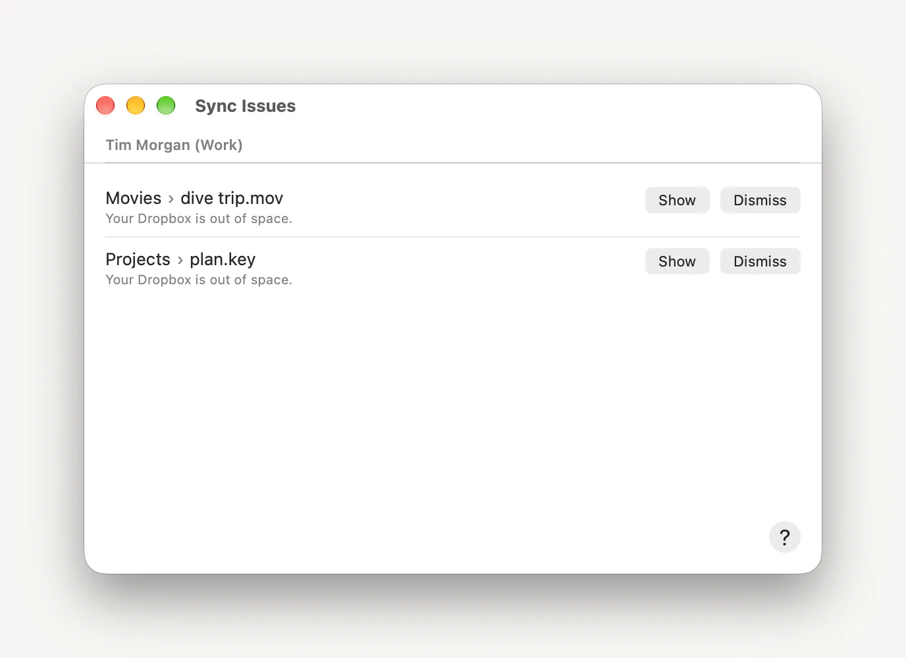

Cuando Zephyr no puede sincronizar algo, conserva el elemento y el motivo en lugar de reintentarlo en silencio. Bajo la cuenta aparece un recuento, y la lista que hay detrás indica qué elementos y por qué.

Haz clic en Zephyr en la barra de menús.
Haz clic en la fila de lo que no se ha podido sincronizar, bajo la cuenta.
También puedes elegir Cuenta ▸ Problemas de sincronización en la barra de menús mientras hay una ventana de Zephyr abierta.
Cada fila nombra el elemento por su ruta en tu Dropbox y, debajo, indica qué ha fallado.
Mostrar muestra el elemento en el Finder, para que veas en qué estado está.
Descartar quita la fila de la lista. No arregla nada; úsalo cuando ya hayas resuelto lo del elemento o cuando el motivo ya no se aplique.
Causas habituales que conviene comprobar: el elemento es más grande de lo que cabe en tu Dropbox, su nombre contiene algo que Dropbox no acepta o el elemento es un enlace simbólico, que Dropbox no admite en absoluto. Una fila que indica que un elemento no se puede compartir hasta que se verifique el correo electrónico de la cuenta está esperando a que actúes tú, no Zephyr: verifica la dirección con Dropbox y desaparecerá.
Un archivo modificado en dos sitios a la vez no es un fallo y no aparece aquí. Dropbox conserva ambos y da nombre a la segunda copia por sí mismo; consulta Si el mismo archivo se ha modificado en dos sitios.
Una fila roja sobre los elementos es un problema de la propia cuenta y no de un archivo concreto, y mientras persista no se puede sincronizar nada de lo que hay debajo. Resuélvelo primero; consulta Si Zephyr no puede conectarse a tu cuenta de Dropbox.
Si la lista es larga y nada tiene sentido, reconstruir lo que Zephyr sabe de la cuenta es el recurso drástico.
Haz clic en Zephyr en la barra de menús y, a continuación, en Gestionar cuentas…
Haz clic en la cuenta mientras mantienes pulsada la tecla Control y elige Reconstruir el índice…
Zephyr vuelve a leer la cuenta desde Dropbox desde cero. Tus archivos no se tocan; solo se sustituye el registro que Zephyr tiene de ellos.